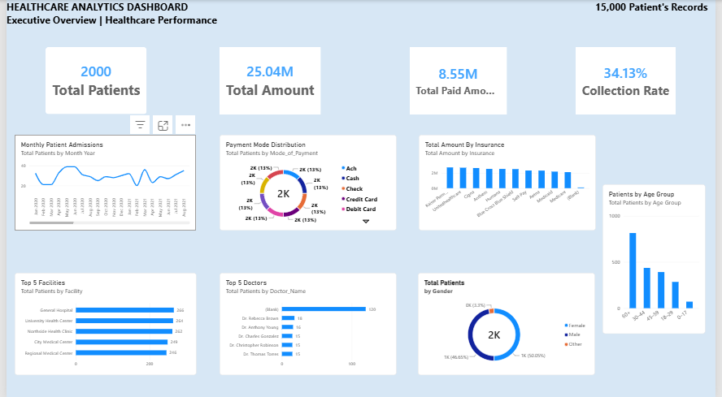

I'm Roshan M, an aspiring Data Analyst with hands-on experience in SQL, Power BI, Excel and data preparation. I enjoy transforming data into useful business insights.
Explore My ProjectsI am transitioning into Data Analytics after professional experience in healthcare revenue cycle operations. I completed Data Analytics with AI training at FITA Academy and have been building practical projects to strengthen my analytical and reporting skills.
Tools and technologies I use in my learning and projects.

An analytics project using healthcare data covering patient demographics, doctors, facilities, insurance, payments and financial performance.
Key focus: Data preparation, KPI reporting, collection rate and interactive dashboard analysis.
Tools: Power BI, Power Query and DAX.
I'm interested in entry-level Data Analyst opportunities.
LinkedIn Profile GitHub Profile Download Resume